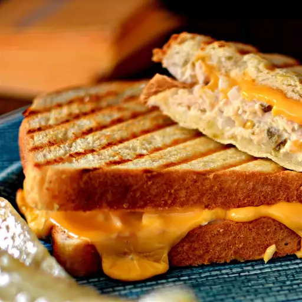

Tuna Panini Melt

Description
A new twist on an old standby.
Ingredients
- 1 can of white albacore tuna in water
- 1 tablespoon mayonnaise
- 1 tablespoon balsamic vinegar
- 1 tablespoon chopped onion
- 1 chopped dill pickle
- 4 slices sourdough bread
- 2 slices American cheese
Steps
- Mix tuna, mayonnaise, balsamic vinegar, onion, and dill pickle together in a bowl
- Spread tuna mixture over 2 slices of bread
- Top with American cheese and remaining 2 slices of bread
- Cook in a panini press until bread is crispy and cheese is melted